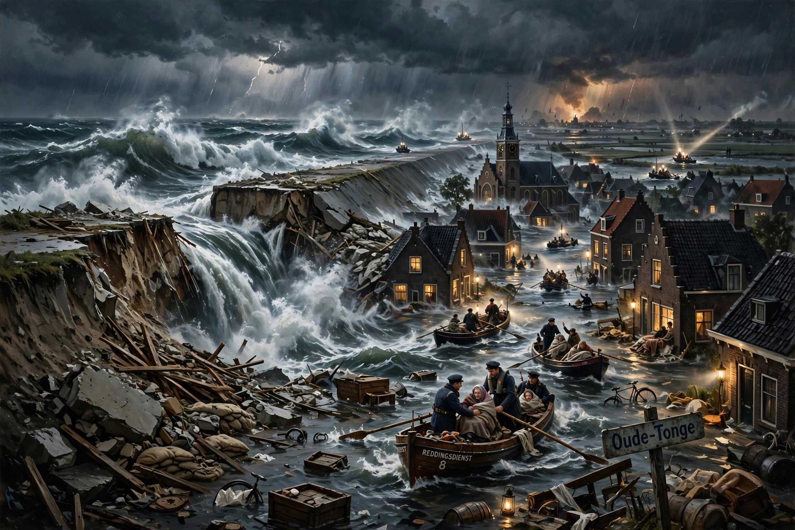

The North Sea flood of 1953 was a major flood caused by a heavy storm and high spring tide on the night of 31 January – 1 February 1953. Flooding struck the Netherlands, Belgium, England and Scotland, killing 2,551 people.

| North Sea flood of 1953 | |
|---|---|
| Date | 31 Jan – 1 Feb 1953 |
| Deaths | 2,551 |
| Areas | Netherlands, England, Belgium, Scotland |
In the Netherlands 1,836 died, mostly in Zeeland and South Holland, as dikes breached in 150 places and 9% of farmland flooded. In England 307 died, including 58 at Canvey Island and the ferry Princess Victoria sank off Scotland with 133 lost.
The disaster prompted the Netherlands' Delta Works, one of the world's largest flood-defence systems, and the Thames Barrier in London. See North Holland, Delta Works, Oceanic climate.